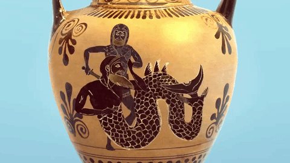

THE OLD MAN AND DEATH.
A poor feeble old Man, who had crawled from his cottage into a neighbouring wood to gather a few sticks, had made up his bundle, and laying it over his shoulders, was trudging homewards; but what with age, and the length of the way, he grew so faint and weak, that he sunk under it, and as he sat upon the ground, called upon Death to come once for all and ease him of his troubles. Death no sooner heard him, than he came and demanded what he wanted? The poor old Creature, who little thought Death was so near, frightened almost out of his senses with his terrible aspect, answered him trembling, That having by chance let his bundle of sticks fall, and being too infirm to get it up himself, he had made bold to call upon him to help him; and he hoped his worship was198 not offended with him for the liberty he had taken in craving his assistance.

THE CLOWN AND THE GNAT.
As a clownish Fellow was sitting musing upon a bank, a Gnat alighted upon his leg and bit it. He slapped his hand upon the place, with the intention of crushing the assailant; but the little nimble insect escaped between his fingers, and repeated its attacks. Every time he struck at it, he gave himself a smart blow upon the leg, but missed his aim. At this he became enraged, and in the height of his peevish and impatient humour, he earnestly prayed to Hercules, beseeching him with his mighty power to stretch forth his arm against a pernicious insect, by which he was so miserably tormented.
THE WOLF AND THE LAMB.
One hot sultry day, a Wolf and a Lamb happened to come just at the same time, to quench their thirst in the stream of a brook that fell tumbling down the side of a rocky mountain. The Wolf stood upon the higher ground, and the Lamb at some distance below him. However, the Wolf, having a mind to pick a quarrel with the Lamb, asked him what he meant by disturbing the water, and making it so muddy that he could not drink? and, at the same time, demanded satisfaction. The Lamb, frightened at this threatening charge, told him, in a tone as mild as possible, that with humble submission, he could not conceive how that could be, since the water which he drank ran down from the Wolf to him, and therefore could not be disturbed so far up the stream. Be that as it may, replies the Wolf, you are a rascal, and I have192 been told that you used ill language concerning me behind my back, about half a year ago. Upon my word, says the Lamb, the time you mention was before I was born. The Wolf, finding it to no purpose to argue any longer against truth, fell into a great passion, snarling and foaming at the mouth as if he had been mad; and drawing nearer to the Lamb, Sirrah, says he, if it were not you, it was your father, and that is the same. So he seized the poor innocent helpless thing, tore it to pieces, and made a meal of it
